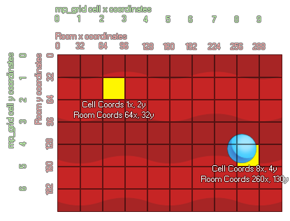

mp_grid_add_cell(id, h, v);
| Argument | Description |
|---|---|
| id | Index of the mp_grid that is to be used |
| h | Horizontal position of the cell in the grid |
| v | Vertical position of the cell in the grid |
Returns: N/A
With this function we can mark individual cells within the mp_grid as being "forbidden" meaning that the path finding functions will not ever cross them. Now, normally you work in x/y room coordinates,
and not in mp_grid cell coordinates. So lets consider the following image which shows how the two can correlate :

As you can see the mp_grid is numbered as a series of cells (starting at 0,0 in the upper left corner), and when you place this grid over the room there is a direct correlation between the room coordinates (which also
start at 0,0 in the top left) and the cells within the grid. In the image you can see that an instance at the position 260,130 falls on the grid cell 8,4. You can calculate mathematically the exact cell that a position lands
on easily by either dividing the number by the grid resolution and then rounding down or (if you are using power of 2 grid resolutions like 8, 16, 32 etc...) you can use the bitwise operators. It should be noted
that the bitwise operation is faster. The example below shows both methods.
with (obj_Wall)
{
mp_grid_add_cell(grid, floor(x / 32), floor(y / 32));
}
with (obj_Door)
{
mp_grid_add_cell(grid, x>>5, y>>5);
}
The above code will make all "obj_Wall" and all obj_Door add their equivalent cell positions into the mp_grid indexed in the variable "grid". In the first part of the example, this is done by taking the x/y coordinates of the object and dividing them by the resolution of the grid (using floor to keep the values as integers), and in the second part (since the grid resolution is a power of 2) it is done by bit-shifting the x,y coordinates 5 places to the right.